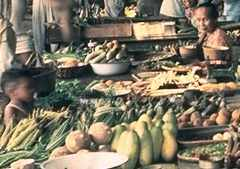
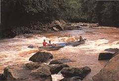

Obst aller Arten
Auf Borneo gibt es unzählig viel Obst. Und von jeder Sorte gibt es wieder viele Nebensorten. Außer Bananen, Ananas und Kokosnüssen ist das meiste in Deutschland unbekannt. Auch haben wir eine ganze Menge und viele Sorten Djiruks (Zitrusfrüchte).  Ich will mal ein paar Sorten aufzählen: Duku, Langsat, Tjempedak, Mangistan, Bunderan, Durian, Rambutan, Nangka, Manga, Djambu, Kedondong, Blimbing, Benkuang und noch viele andere. Äpfel und Birnen wachsen in Borneo nicht. Noch zwei wichtige Dinge, die es in Borneo gibt, sind das Ulinholz und der "orang hutan" (Waldmensch). Das Ulinholz ist so schwer und stark, dass es im Wasser sinkt und selbst die Termiten es nicht annagen können. Auch wird es nie morsch. Der Orang-Utan gehört zu den Menschenaffen. Ein großer Teil der Insel ist noch Urwald. Eisenbahnen
gibt es überhaupt keine und nur ganz wenige Straßen.
Der Hauptverkehr spielt sich auf den riesigen Flüssen ab.
Aus dem Schwaner- und Müller-Gebirge
(Die deutschen Namen dieser Gebirge haben eigenartigerweise
allen Nationalisierungsbestrebungen widerstanden. Vielleicht, weil da kaum jemand wohnt. DM 2003)
fließen
gewaltige Ströme ins Meer, die meisten nach Süden.
Viele davon sind größer und wasserreicher als der
Rhein. An ihren Oberläufen sind Stromschnellen.

Der bekannteste Strom in Südrichtung ist der Barito, in
Westrichtung der Kapuas und in Ostrichtung der Mahakam. Der
Kapuas ist der größte Fluss Indonesiens. An diesen
Strömen und ihren unzähligen Nebenflüssen liegen
große und kleine Dörfer. Darum ist das wichtigste
Fahrzeug der Dorfbevölkerung die Prau (Einbaum). Es gibt
aber auch richtige Taximotorboote, welche die Leute schneller
von einem Kampong (Dorf) zum andern bringen oder zum Einkauf in
die Stadt.
In den Küstengebieten Borneos wohnen Malaien.
Sie sind Mohammedaner. Im Inneren des Landes wohnen die Dajaks.
Diese haben teilweise noch ihre heidnische Urreligion. Viele
sind aber auch Christen oder Mohammedaner.
Dass die Dajaks noch Kopfjäger sein sollen, gibt es nur noch in
Jugendbüchern. Über die lache ich mich kaputt, weil
alles nicht stimmt. ("Die Kopfjäger von Bandung" hieß so ein Buch
aus dem Schneider Verlag. Bandung lag eigenartigerweise in Kalimantan, und
war nicht eine Großstadt in Java.).
Herzlich grüßt Euch Dieter Menne von Borneo, 9 Jahre alt.
Dayaks
Ich durfte meine Eltern schon einige Male auf Bootsfahrten ins Innere begleiten, Dann waren wir zu Gast bei den Dajaks (Neue Schreibweise: Dayaks). Ich habe viele dajakische Bekannte und Freunde. (Diese Bemerkung entsprang der Parental Political Correctness. In Martapura gab es nämlich fast keine Dayaks, sondern Küstenmalaien, und zudem habe ich es dort trotz perfekter Indonesischkenntnisse nie geschafft, mit anderen Kindern zu spielen. Dafür wurde ich von Trauben johlender Halbwüchsiger als orang belanda durch die Straßen gejagt, und einmal sogar vom Fahrrad gerissen. Es war gar nicht lustig. In Kuningan, Java, ab 1959 hat sich das dann geändert, dank täglichen Fußballspielens. DM 2003)Herzlich grüßt Euch Dieter Menne von Borneo, 9 Jahre alt.